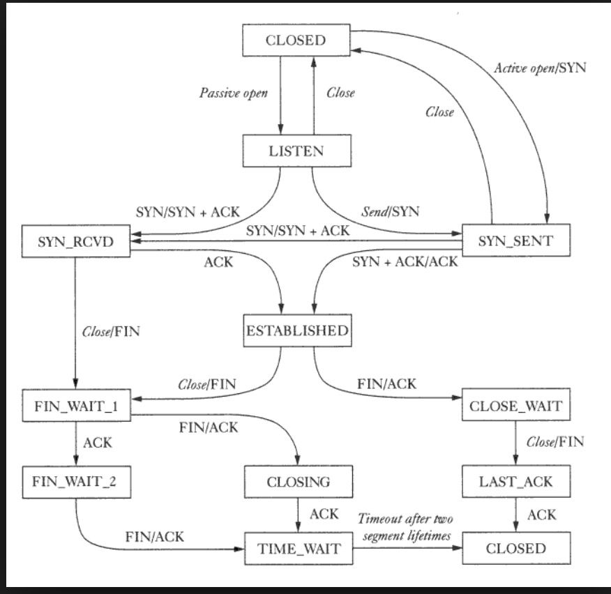
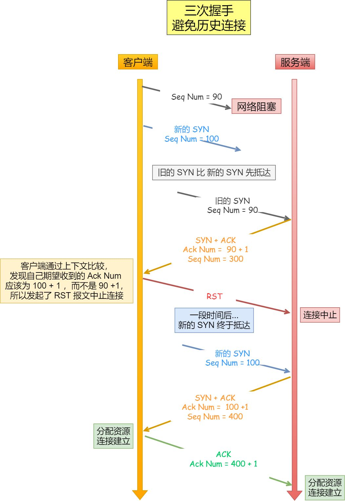
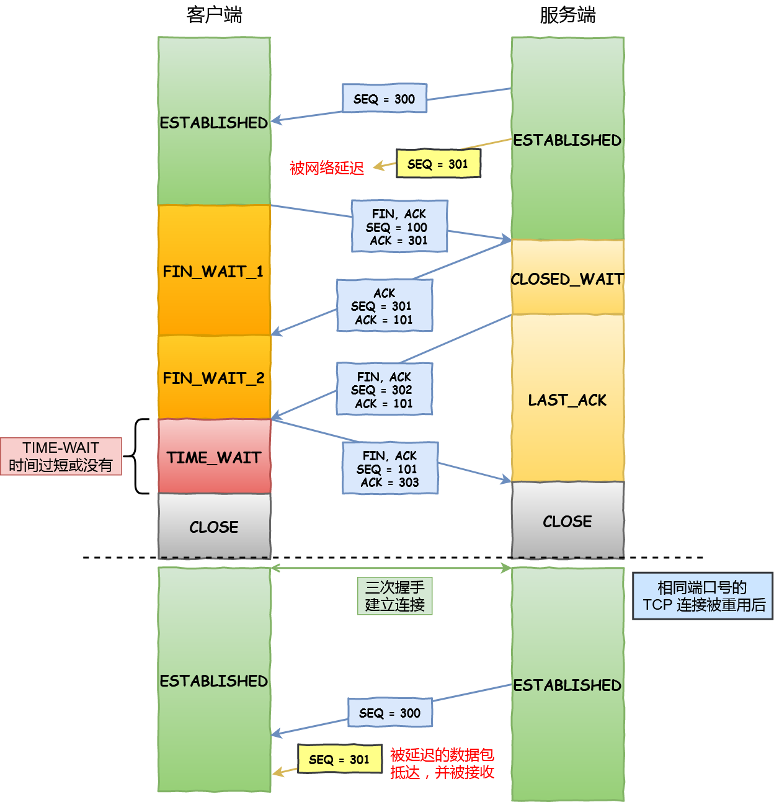
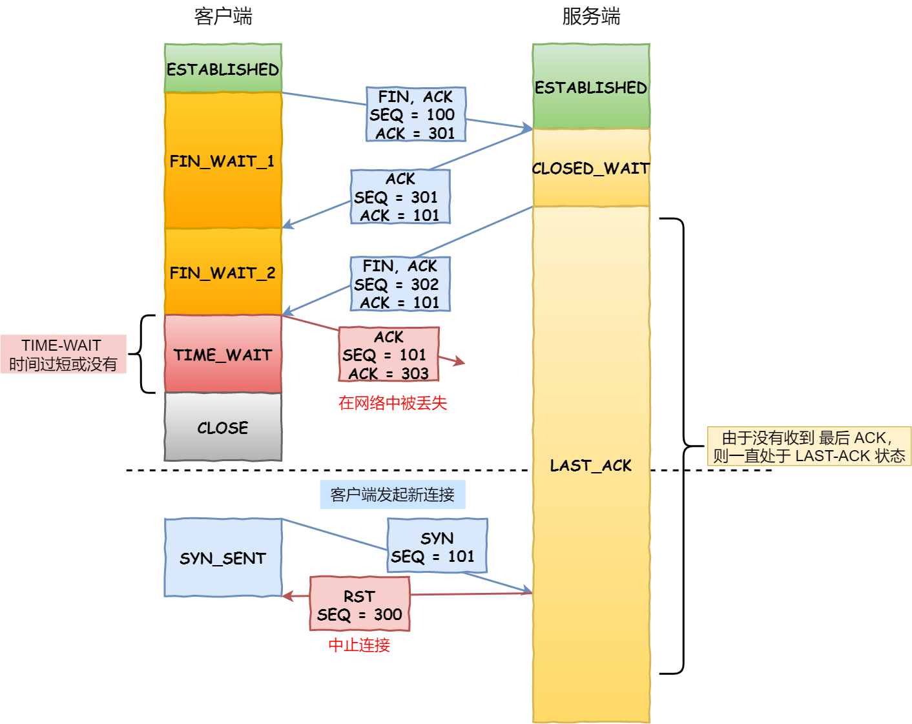

TCP-传输控制协议
TCP简介
TCP是什么
传输控制协议（英语：Transmission Control Protocol，缩写：TCP）是一种面向连接的、可靠的、基于字节流的传输层通信协议，由IETF的RFC 793定义。
- ⾯向连接：⼀定是⼀对⼀才能连接，不能像 UDP 协议可以⼀个主机同时向多个主机发送消息，也就是⼀
对多是⽆法做到的；
可靠的：⽆论的⽹络链路中出现了怎样的链路变化，TCP 都可以保证⼀个报⽂⼀定能够到达接收端；
字节流：消息是没有边界的，所以⽆论我们消息有多⼤都可以进⾏传输。并且消息是有序的，当
前⼀个消息没有收到的时候，即使它先收到了后⾯的字节，那么也不能扔给应⽤层去处理，同时对重
复的报⽂会⾃动丢弃。
TCP的功能与角色
在因特网协议族（Internet protocol suite）中，TCP层是位于IP层之上，应用层之下的中间层。不同主机的应用层之间经常需要可靠的、像管道一样的连接，但是IP层不提供这样的流机制，而是提供不可靠的包交换。
在简化的计算机网络OSI模型中，它完成第四层传输层所指定的功能。用户数据报协议（UDP）是同一层内另一个重要的传输协议。
应用层向TCP层发送用于网间传输的、字节表示的数据流。
然后TCP把数据流分割成适当长度的报文段（通常受该计算机连接的网络的数据链路层的最大传输单元（MTU）的限制）。
之后TCP把结果包传给IP层，由它来透过网络将包传送给接收端实体的TCP层。
TCP 是如何保证可靠性的
- 数据分块：应用数据被分割成 TCP 认为最适合发送的数据块。
- 序列号和确认应答：TCP 给发送的每一个包进行编号，在传输的过程中，每次接收方收到数据后，都会对传输方进行确认应答，即发送 ACK 报文，这个 ACK 报文当中带有对应的确认序列号，告诉发送方成功接收了哪些数据以及下一次的数据从哪里开始发。除此之外，接收方可以根据序列号对数据包进行排序，把有序数据传送给应用层，并丢弃重复的数据。
- 校验和： TCP 将保持它首部和数据部分的检验和。这是一个端到端的检验和，目的是检测数据在传输过程中的任何变化。如果收到报文段的检验和有差错，TCP 将丢弃这个报文段并且不确认收到此报文段。
- 流量控制： TCP 连接的双方都有一个固定大小的缓冲空间，发送方发送的数据量不能超过接收端缓冲区的大小。当接收方来不及处理发送方的数据，会提示发送方降低发送的速率，防止产生丢包。TCP 通过滑动窗口协议来支持流量控制机制。
- 拥塞控制： 当网络某个节点发生拥塞时，减少数据的发送。
- 重传机制： 超时重传：当 TCP 发出一个报文段后，它启动一个定时器，等待目的端确认收到这个报文段，如果超过某个时间还没有收到确认，将重发这个报文段；快速重传：快速重传的⼯作⽅式是当收到三个相同的 ACK 报⽂时，会在定时器过期之前，重传丢失的报⽂段。
下面的内容和其他文章会详细叙述这一点。
什么是 TCP 连接
⽤于保证可靠性和流量控制维护的某些状态信息，这些信息的组合，包括Socket、序列号和窗⼝
⼤⼩称为连接。
- Socket：由 IP 地址和端⼝号组成;
- 序列号：⽤来解决乱序问题等;
- 窗⼝⼤⼩：⽤来做流量控制
TCP 四元组可以唯⼀的确定⼀个连接，四元组包括如下：
- 源地址
- 源端⼝
- ⽬的地址
- ⽬的端⼝
一个套接字由相关五元组构成，协议、本地地址、本地端口、远程地址、远程端口。
TCP的可靠性简单介绍
TCP为了保证不发生丢包，就给每个包一个序号，同时序号也保证了传送到接收端实体的包的按序接收（序号的作用: 1.包不丢失 2.包不重复 3. 有序接受）。
然后接收端实体对已成功收到的包发回一个相应的确认信息（ACK）；如果发送端实体在合理的往返时延（RTT）内未收到确认，那么对应的数据包就被假设为已丢失并进行重传。
TCP用一个校验和函数来检验数据是否有错误，在发送和接收时都要计算校验和。
数据在TCP层称为流（Stream），数据分组称为分段（Segment）。作为比较，数据在IP层称为Datagram，数据分组称为分片（Fragment）。 UDP 中分组称为Message。
TCP 连接数有多少
有⼀个 IP 的服务器监听了⼀个端⼝，它的 TCP 的最⼤连接数是多少？
理论最大值
Client 最大 TCP 连接数
client 在每次发起 TCP 连接请求时，如果自己并不指定端口的话，系统会随机选择一个本地端口（local port），该端口是独占的，不能和其他 TCP 连接共享。TCP 端口的数据类型是 unsigned short，因此本地端口个数最大只有 65536，除了端口 0 不能使用外，其他端口在空闲时都可以正常使用，这样可用端口最多有 65535 （2的16次方）个。Server最大 TCP 连接数
server 通常固定在某个本地端口上监听，等待 client 的连接请求。不考虑地址重用（Unix 的 SO_REUSEADDR 选项）的情况下，即使 server 端有多个 IP，本地监听端口也是独占的，因此 server 端 TCP 连接 4 元组中只有客户端的 IP 地址和端口号是可变的，因此最大 TCP 连接=客户端 IP 数 × 客户端 port 数，对 IPV4，在不考虑 IP 地址分类的情况下，最大 TCP 连接数约为 2 的 32 次方（IP 数）× 2 的 16 次方（port 数），也就是 server 端单机最大 TCP 连接数约为 2 的 48 次方。
- 主要是⽂件描述符限制，socket 都是作为⽂件来处理，所以⾸先要通过 ulimit 配置⽂件描述符的数⽬；
- 内存限制，每个 TCP 连接都要占⽤⼀定内存，操作系统的内存是有限的；
- IP协议的规定（一些 IP 地址和端口具有特殊含义，没有对外开放）。
对 server 端，通过增加内存、修改最大文件描述符个数等参数，单机最大并发 TCP 连接数超过 10 万 是没问题的。
TCP段的头
大小：固定部分为20字节，选项最多40字节，限制60字节。

来源连接端口（16位长）－发送端连接端口；
目的连接端口（16位长）－接收端连接端口；
序列号（seq，32位长）
- 如果含有同步标志位（SYN），则此为最初的用于同步的序列号；第一个数据比特的序列码为本序列号+1；
- 如果没有同步标志位（SYN），则此为第一个数据比特的序列码。
确认号（ack，32位长）— 下一次期望收到的数据的开始序列号，也即已经收到的数据的字节长度加1。
数据偏移（4位长）— 以4字节为单位计算出的数据段开始地址的偏移值（因为选项部分长度是可变的），也就是TCP头部长度。
保留（3比特长）— 须置0。
标志符（9比特长）
- NS — ECN-nonce。ECN显式拥塞通知（Explicit Congestion Notification）是对TCP的扩展，定义于 RFC 3540 （2003）。ECN允许拥塞控制的端对端通知而避免丢包。ECN为一项可选功能，如果底层网络设施支持，则可能被启用ECN的两个端点使用。在ECN成功协商的情况下，ECN感知路由器可以在IP头中设置一个标记来代替丢弃数据包，以标明阻塞即将发生。数据包的接收端回应发送端的表示，降低其传输速率，就如同在往常中检测到包丢失那样。
- CWR — Congestion Window Reduced，定义于 RFC 3168（2001）。
- ECE — ECN-Echo有两种意思，取决于SYN标志的值，定义于 RFC 3168（2001）。
- URG — 为1表示高优先级数据包，紧急指针字段有效。
- ACK — 为1表示确认号（ack）字段有效，用于表示已经接收到消息了
- PSH — 为1表示是带有PUSH标志的数据，指示接收方应该尽快将这个报文段交给应用层而不用等待缓冲区装满。
- RST — 为1表示出现严重差错，可能需要重新创建TCP连接，还可以用于拒绝非法的报文段和拒绝连接请求。
- SYN — 为1表示这是连接请求或是连接接受请求，用于创建连接和使顺序号同步。
- FIN — 为1表示发送方没有数据要传输了，要求释放连接。
窗口（WIN，16位长）— 表示从确认号开始，本报文的发送方可以接收的字节数，即接收窗口大小。用于流量控制。(2^16 = 64K，这个数值并不大，所以头部选项里有窗口扩大因子这个选项)。
校验和（Checksum，16位长）—对整个的TCP报文段，包括TCP头部和TCP数据，以16位字进行计算所得。这是一个强制性的字段。
紧急指针（16位长）—本报文段中的紧急数据的最后一个字节的序号。
选项字段 — 最多40字节（必须是4字节的倍数）。每个选项的开始是1字节的kind字段，说明选项的类型，
每个选项具有类型-长度-值的结构。
0：选项表结束（1字节）
1：无操作（1字节）用于选项字段之间的字边界对齐。
2：最大报文段长度（4字节，Maximum Segment Size，MSS）通常在创建连接而设置SYN标志的数据包中指明这个选项，指明本端所能接收的最大长度的报文段。通常将MSS设置为（MTU - 40）字节，携带TCP报文段的IP数据报的长度就不会超过MTU（MTU最大长度为1518字节，最短为64字节），从而避免本机发生IP分片。只能出现在同步报文段中，否则将被忽略。
3：窗口扩大因子（3字节，wscale），取值0-14。用来把TCP的窗口的值左移的位数，使窗口值乘倍。只能出现在同步报文段中，否则将被忽略。这是因为现在的TCP接收数据缓冲区（接收窗口）的长度通常大于65535字节。
4：sackOK—发送端支持并同意使用SACK选项。
5：SACK实际工作的选项。
8：时间戳（10字节，TCP Timestamps Option，TSopt）。一旦在连接建立阶段启用了它，那么每个数据包都要包含这个选项，主要用来计算来回时间样值，该值被用来估算多长时间之后数据包可以被认为丢失。
- 发送端的时间戳（Timestamp Value field，TSval，4字节）
- 时间戳回显应答（Timestamp Echo Reply field，TSecr，4字节）
19：MD5摘要，将TCP伪首部、校验和为0的TCP首部、TCP数据段、通信双方约定的密钥（可选）计算出MD5摘要值并附加到该选项中，作为类似对TCP报文的签名。通过 RFC 2385 引入，主要用于增强BGP通信的安全性。
TCP 连接管理有限状态自动机
有限状态机
有限状态机 (FSM : Finite State Machine) 又称有限状态自动机，简称状态机，是表示有限个状态以及在这些状态之间的转移和动作等行为的数学模型。FSM 的四个基本概念如下：
- 状态 state: 描述机器在特定时间上处于的 环境(circumstance)或状况(status)
- 转换 Transition: 从一种状态到另一种状态的行为(act)
- 事件 Event: 导致状态发生变化的事情
- 动作 Action: 机器从一种状态转换之前对事件所做的响应
FSM通过解释协议可以处于的所有不同状态、可以在每个状态中发生的事件、针对事件采取的操作以及结果发生的转换来描述协议。协议通常在第一次运行时以特定的开始状态启动。尔后，它遵循一系列步骤使其进入常规操作状态，并根据特定类型的输入或其他情况移动到其他状态。状态机之所以称为有限状态机，是因为只有有限数量的状态。
建立连接和释放连接所需要的步骤，可以用一个有限状态自动机来表示，该状态自动机的11种状态如下。
在每一种状态中，都存在特定的合法事件：当一个合法事件发生时，可能需要采取某个动作；当发生其他事件时，则报告一个错误。
下表为TCP状态码列表，以S指代服务器，C指代客户端，S&C表示两者，S/C表示两者之一：
LISTEN S
服务器等待从任意远程TCP端口的连接请求。侦听状态。
SYN-SENT C
客户在发送连接请求后等待匹配的连接请求。通过connect()函数向服务器发出一个同步（SYNC）信号后进入此状态。
SYN-RECEIVED S
服务器已经收到并发送同步（SYNC）信号之后等待确认（ACK）请求。
ESTABLISHED S&C
服务器与客户的连接已经打开，收到的数据可以发送给用户。数据传输步骤的正常情况。此时连接两端是平等的。这称作全连接。
FIN-WAIT-1 S&C
（服务器或客户）主动关闭端调用close（）函数发出FIN请求包，表示本方的数据发送全部结束，等待TCP连接另一端的ACK确认包或FIN&ACK请求包。
FIN-WAIT-2 S&C
主动关闭端在FIN-WAIT-1状态下收到ACK确认包，进入等待远程TCP的连接终止请求的半关闭状态。这时主动关闭端可以接收数据，但不再发送数据。
CLOSE-WAIT S&C
被动关闭端接到FIN后，就发出ACK以回应FIN请求，并进入等待本地用户的连接终止请求的半关闭状态。这时被动关闭端可以发送数据，但不再接收数据。
CLOSING S&C
在发出FIN后，又收到对方发来的FIN后，进入等待对方对己方的连接终止（FIN）的确认（ACK）的状态。少见。
LAST-ACK S&C
被动关闭端全部数据发送完成之后，向主动关闭端发送FIN，进入等待确认包的状态。
TIME-WAIT S/C
主动关闭端接收到FIN后，就发送ACK包，等待足够时间以确保被动关闭端收到了终止请求的确认包。（按照RFC 793，一个连接可以在TIME-WAIT保证最大四分钟，即最大分段寿命（Maximum Segment Lifetime）的2倍）
CLOSED S&C
完全没有连接。
CLOSED：无连接是活动的或正在进行
LISTEN：服务器在等待进入呼叫
SYN_RECV：一个连接请求已经到达，等待确认
SYN_SENT：应用已经开始，打开一个连接
ESTABLISHED：正常数据传输状态
FIN_WAIT1：应用说它已经完成
FIN_WAIT2：另一边已同意释放
ITMED_WAIT：等待所有分组死掉
CLOSING：两边同时尝试关闭
TIME_WAIT：另一边已初始化一个释放
LAST_ACK：等待所有分组死掉

另附一张图：
TCP三次握手
三次握手的过程
图示

文字描述（可能更清楚）
- A –> B SYN my sequence number is X
- A <– B ACK your sequence number is X
- A <– B SYN my sequence number is Y
- A –> B ACK your sequence number is Y
2与3都是 B 发送给 A，因此可以合并在一起，因此称为three way (or three message) handshake。
三次握手是 TCP 连接的建立过程。在握手之前，主动打开连接的客户端结束 CLOSE 阶段，被动打开的服务器也结束 CLOSE 阶段，并进入 LISTEN 阶段。随后进入三次握手阶段：
① 首先客户端向服务器发送一个 SYN 包，并等待服务器确认，其中：
- 标志位为 SYN，表示请求建立连接；
- 序号为 Seq = x（x 一般取随机数）；
- 随后客户端进入 SYN-SENT 阶段。
② 服务器接收到客户端发来的 SYN 包后，对该包进行确认后结束 LISTEN 阶段，并返回一段 TCP 报文，其中：
- 标志位为 SYN 和 ACK，表示确认客户端的报文 Seq 序号有效，服务器能正常接收客户端发送的数据，并同意创建新连接；
- 序号为 Seq = y；
- 确认号为 Ack = x + 1，表示收到客户端的序号 Seq 并将其值加 1 作为自己确认号 Ack 的值。
- 随后服务器端进入 SYN-RECV 阶段。
③ 客户端接收到发送的 SYN + ACK 包后，明确了从客户端到服务器的数据传输是正常的，从而结束 SYN-SENT 阶段。并返回最后一段报文。其中：
- 标志位为 ACK，表示确认收到服务器端同意连接的信号；
- 序号为 Seq = x + 1，表示收到服务器端的确认号 Ack，并将其值作为自己的序号值；
- 确认号为 Ack= y + 1，表示收到服务器端序号 seq，并将其值加 1 作为自己的确认号 Ack 的值。
- 随后客户端进入 ESTABLISHED。当服务器端收到来自客户端确认收到服务器数据的报文后，得知从服务器到客户端的数据传输是正常的，从而结束 SYN-RECV 阶段，进入 ESTABLISHED 阶段，从而完成三次握手。
三次握手的意义
常见问题：TCP 为什么是三次握手，而不是两次或四次？
三次握手本身这个说法就是有点问题的。（有点抬杠）
其实三次握手这个说法不好，其实是双方各一次握手，各一次确认，其中一次握手和确认合并在一起，其实质就是双向握手+双向确认的过程。
这个解释也正是上面的文字描述的过程。
教科书的回答
在谢希仁著《计算机网络》第四版中讲“三次握手”的目的是为了防止已失效的连接请求报文段突然又传送到了服务端，因而产生错误。
在另一部经典的《计算机网络》一书中讲“三次握手”的目的是为了解决网络中存在延迟的重复分组的问题。
这两种不用的表述其实阐明的是同一个问题。
下面会对这两个问题作出详细解释。
最简洁的回答
简单说，让双方都证实对方能发收。
知道对方能收是因为收到对方的因为收到而发的回应。
- A发，B收， B知道A能发
- B发，A收， A知道B能发收
- A发，B收， B知道A能收
综合全面的回答
- 三次握手才可以阻止重复历史连接的初始化（主要原因）
- 三次握手才可以同步双方的初始序列号
- 三次握手才可以避免资源浪费
阻止重复历史连接的初始化
我们来看看 RFC 793 指出的 TCP 连接使用三次握手的首要原因：
The principle reason for the three-way handshake is to prevent old duplicate connection initiations from causing confusion.
简单来说，三次握手的首要原因是为了防止旧的重复连接初始化造成混乱。
网络环境是错综复杂的，往往并不是如我们期望的一样，先发送的数据包，就先到达目标主机，相反可能会由于网络拥堵等原因，会使得旧的数据包，先到达目标主机，那么这种情况下 TCP 三次握手是如何避免的呢？
客户端连续发送多次 SYN 建立连接的报文，在网络拥堵等情况下：
- 一个旧 SYN 报文比最新的 SYN 报文早到达了服务端；
- 那么此时服务端就会回一个
SYN + ACK报文给客户端； - 客户端收到后可以根据自身的上下文，判断这是一个历史连接（序列号过期或超时），那么客户端就会发送
RST报文给服务端，表示中止这一次连接。
如果是两次握手连接，就不能判断当前连接是否是历史连接，三次握手则可以在客户端（发送方）准备发送第三次报文时，客户端因有足够的上下文来判断当前连接是否是历史连接：
- 如果是历史连接（序列号过期或超时），则第三次握手发送的报文是
RST报文，以此中止历史连接； - 如果不是历史连接，则第三次发送的报文是
ACK报文，通信双方就会成功建立连接；
所以， TCP 使用三次握手建立连接的最主要原因是防止历史连接初始化了连接。
同步双方的初始序列号
TCP 协议的通信双方， 都必须维护一个「序列号」， 序列号是可靠传输的一个关键因素，它的作用：
- 接收方可以去除重复的数据；
- 接收方可以根据数据包的序列号按序接收；
- 可以标识发送出去的数据包中， 哪些是已经被对方收到的；
可见，序列号在 TCP 连接中占据着非常重要的作用，所以当客户端发送携带「初始序列号」的 SYN 报文的时候，需要服务端回一个 ACK 应答报文，表示客户端的 SYN 报文已被服务端成功接收，那当服务端发送「初始序列号」给客户端的时候，依然也要得到客户端的应答回应，这样一来一回，才能确保双方的初始序列号能被可靠的同步。
四次握手其实也能够可靠的同步双方的初始化序号，但由于第二步和第三步可以优化成一步，所以就成了「三次握手」。
而两次握手只保证了一方的初始序列号能被对方成功接收，没办法保证双方的初始序列号都能被确认接收。
避免资源浪费
如果只有「两次握手」，当客户端的 SYN 请求连接在网络中阻塞，客户端没有接收到 ACK 报文，就会重新发送 SYN ，由于没有第三次握手，服务器不清楚客户端是否收到了自己发送的建立连接的 ACK 确认信号，所以每收到一个 SYN 就只能先主动建立一个连接，这会造成什么情况呢？
如果客户端的 SYN 阻塞了，重复发送多次 SYN 报文，那么服务器在收到请求后就会建立多个冗余的无效链接，造成不必要的资源浪费。
即两次握手会造成消息滞留情况下，服务器重复接受无用的连接请求 SYN 报文，而造成重复分配资源。
回归本质的回答
这个问题的本质是, 信道不可靠, 每个包能到达跟下一个包能到达没有什么必然的联系。
但是通信双发需要就某个问题达成一致，而要解决这个问题, 无论你在消息中包含什么信息, 三次通信是理论上的最小值. 所以三次握手不是TCP本身的要求, 而是为了满足”在不可靠信道上可靠地传输信息”这一需求所导致的。
理论上讲不论握手多少次都不能确认一条信道是“可靠”的，但通过3次握手可以至少确认它是“可用”的，再往上加握手次数不过是提高“它是可用的”这个结论的可信程度。
这个问题在谢希仁版《计算机网络》里说了。
三次是保证双方互相明确对方能收能发的最低值。
因此，如果信道是可靠的, 即无论什么时候发出消息, 对方一定能收到，或者你不关心是否要保证对方收到你的消息, 那就能像UDP那样直接发送消息就可以了。
这可视为对“三次握手”目的的另一种解答思路。
面试常见问题汇总
三次握手的握手信息对方没有收到会怎么样
TCP四次挥手
四次挥手的过程
TCP连接是全双工的，但是在释放连接的时候最好把它看成是一对单双工连接。
- 客户端打算关闭连接，此时会发送⼀个 TCP ⾸部 FIN 标志位被置为 1 的报⽂，也即 FIN 报⽂，之后客
户端进⼊ FIN_WAIT_1 状态。
服务端收到该报⽂后，就向客户端发送 ACK 应答报⽂，接着服务端进⼊ CLOSED_WAIT 状态。
客户端收到服务端的 ACK 应答报⽂后，之后进⼊ FIN_WAIT_2 状态。
等待服务端处理完数据后，也向客户端发送 FIN 报⽂，之后服务端进⼊ LAST_ACK 状态。
客户端收到服务端的 FIN 报⽂后，回⼀个 ACK 应答报⽂，之后进⼊ TIME_WAIT 状态
服务器收到了 ACK 应答报⽂后，就进⼊了 CLOSED 状态，⾄此服务端已经完成连接的关闭。
客户端在经过 2MSL ⼀段时间后，⾃动进⼊ CLOSED 状态，⾄此客户端也完成连接的关闭。
你可以看到，每个⽅向都需要⼀个 FIN 和⼀个 ACK，因此通常被称为四次挥⼿。
图示

双⽅都可以主动断开连接，断开连接后主机中的资源将被释放。
这⾥⼀点需要注意是：主动关闭连接的，才有 TIME_WAIT 状态。
常见问题
为什么挥⼿需要四次
再来回顾下四次挥⼿双⽅发 FIN 包的过程，就能理解为什么需要四次了。
关闭连接时:
客户端向服务端发送 FIN 时，仅仅表示客户端不再发送数据了但是还能接收数据。
服务器收到客户端的 FIN 报⽂时，先回⼀个 ACK 应答报⽂，⽽服务端可能还有数据需要处理和发送，等
服务端不再发送数据时，才发送 FIN 报⽂给客户端来表示同意现在关闭连接。
从上⾯过程可知，服务端通常需要等待完成数据的发送和处理，所以服务端的 ACK 和 FIN ⼀般都会分开发
送，从⽽⽐三次握⼿导致多了⼀次。
举个例子：A 和 B 打电话，通话即将结束后，A 说“我没啥要说的了”，B回答“我知道了”，但是 B 可能还会有要说的话，A 不能要求 B 跟着自己的节奏结束通话，于是 B 可能又巴拉巴拉说了一通，最后 B 说“我说完了”，A 回答“知道了”，这样通话才算结束。
为什么需要 TIME_WAIT 状态
主动发起关闭连接的⼀⽅，才会有 TIME-WAIT 状态。
需要 TIME-WAIT 状态，主要是两个原因：
防⽌具有相同四元组的旧数据包被收到；
保证被动关闭连接的⼀⽅能被正确的关闭，即保证最后的 ACK 能让被动关闭⽅接收，从⽽帮助其正常关
闭；
原因1:防⽌旧连接的数据包
假设 TIME-WAIT 没有等待时间或时间过短，被延迟的数据包抵达后会发⽣什么呢？
如上图⻩⾊框框服务端在关闭连接之前发送的 SEQ = 301 报⽂，被⽹络延迟了。
这时有相同端⼝的 TCP 连接被复⽤后，被延迟的 SEQ = 301 抵达了客户端，那么客户端是有可能正常接收
这个过期的报⽂，这就会产⽣数据错乱等严᯿的问题。
所以，TCP 就设计出了这么⼀个机制，经过 2MSL 这个时间，⾜以让两个⽅向上的数据包都被丢弃，使得原来
连接的数据包在⽹络中都⾃然消失，再出现的数据包⼀定都是新建⽴连接所产⽣的。
原因2:保证连接正确关闭
在 RFC 793 指出 TIME-WAIT 另⼀个重要的作⽤是：
TIME-WAIT - represents waiting for enough time to pass to be sure the remote TCP received theacknowledgment of its connection termination request.
也就是说，TIME-WAIT 作⽤是等待⾜够的时间以确保最后的ACK能让被动关闭⽅接收，从⽽帮助其正常关闭。
假设 TIME-WAIT 没有等待时间或时间过短，断开连接会造成什么问题呢？
如上图红⾊框框客户端四次挥⼿的最后⼀个 ACK 报⽂如果在⽹络中被丢失了，此时如果客户端 TIME-WAIT 过短或没有，则就直接进⼊了 CLOSED 状态了，那么服务端则会⼀直处在 LASE_ACK 状态。
当客户端发起建⽴连接的 SYN 请求报⽂后，服务端会发送 RST 报⽂给客户端，连接建⽴的过程就会被
终⽌。
如果 TIME-WAIT 等待⾜够⻓的情况就会遇到两种情况：
服务端正常收到四次挥⼿的最后⼀个 ACK 报⽂，则服务端正常关闭连接。
服务端没有收到四次挥⼿的最后⼀个 ACK 报⽂时，则会重发 FIN 关闭连接报⽂并等待新的 ACK 报
⽂。
所以客户端在 TIME-WAIT 状态等待 2MSL 时间后，就可以保证双⽅的连接都可以正常的关闭。
一个极端的情况：如果客户端第四次挥⼿ack丢失，服务端超时重发的fin报⽂也丢失，客户端timewait时间超过了2msl，这个时候会发⽣什么？认为连接已经关闭吗？
当客户端 timewait 时间超过了 2MSL，则客户端就直接进⼊关闭状态。
服务端超时重发 fin 报⽂的次数如果超过
tcp_orphan_retries⼤⼩后，服务端也会关闭 TCP 连接。
为什么 TIME_WAIT 等待的时间是 2MSL
MSL 是 Maximum Segment Lifetime，报⽂最⼤⽣存时间，它是任何 TCP 报⽂在⽹络上存在的最⻓时间，超过这个时
间报⽂将被丢弃。因为 TCP 报⽂基于是 IP 协议的，⽽ IP 头中有⼀个 TTL 字段，是 IP 数据报可以经过的最⼤路
由数，每经过⼀个处理他的路由器此值就减 1，当此值为 0 则数据报将被丢弃，同时发送 ICMP 报⽂通知源主机。
MSL 与 TTL 的区别： MSL 的单位是时间;
TTL 是经过路由跳数。所以 MSL 应该要⼤于等于 TTL 消耗为 0 的时间，以确保报⽂已被⾃然消亡。
TIME_WAIT 等待 2 倍的 MSL，⽐较合理的解释是： ⽹络中可能存在来⾃发送⽅的数据包，当这些发送⽅的数据包
被接收⽅处理后⼜会向对⽅发送响应，所以⼀来⼀回需要等待 2 倍的时间。
2 MSL 即是服务器端发出 FIN 报文和客户端发出的 ACK 报文所能保持有效的最大时长。
第1个MSL用于被动关闭方等待最终ACK报文的超时，第2MSL用于被动关闭方重新发送FIN报文的传输时间。
如果重传的 Fin 也丢失了咋办，超过了两个2msl的时间。主动方（举例里客户端）也close了。而被动方（举例里服务端）还在last-ack阶段，会不会出问题。感觉这种情况有点极端就是了。
⽐如，如果被动关闭⽅没有收到断开连接的最后的 ACK 报⽂，就会触发超时重发 Fin 报⽂，另⼀⽅接收到 FIN 后，会重发 ACK 给被动关闭⽅， ⼀来⼀去正好 2 个 MSL。
2MSL 的时间是从客户端接收到FIN后发送ACK后开始计时的。如果在 TIME-WAIT 时间内，因为客户端的 ACK
没有传输到服务端，客户端⼜接收到了服务端重发的 FIN 报⽂，那么 2MSL 时间将重新计时。
在 Linux 系统⾥ 2MSL 默认是 60 秒，那么⼀个 MSL 也就是 30 秒。Linux 系统停留在 TIME_WAIT 的时间为固定的 60 秒。
其定义在 Linux 内核代码⾥的名称为 TCP_TIMEWAIT_LEN：
1 |
如果要修改 TIME_WAIT 的时间⻓度，只能修改 Linux 内核代码⾥TCP_TIMEWAIT_LEN的值，并重新编译 Linux
内核。
TIME_WAIT 过多的危害
考虑高并发短连接的业务场景，在高并发短连接的 TCP 服务器上，当服务器处理完请求后主动请求关闭连接，这样服务器上会有大量的连接处于 TIME_WAIT 状态。服务器维护每一个连接需要一个 socket，也就是每个连接会占用一个文件描述符，而文件描述符的使用是有上限的，如果持续高并发，会导致一些正常的连接失败。
所以，过多的 TIME-WAIT 状态主要的危害有两种：
内存资源占⽤；
对端⼝资源的占⽤，⼀个 TCP 连接⾄少消耗⼀个本地端⼝；
第⼆个危害是会造成严重的后果的，要知道，端⼝资源也是有限的，⼀般可以开启的端⼝为 32768～61000 ，也
可以通过如下参数设置指定net.ipv4.ip_local_port_range。
如果发起连接⼀⽅的 TIME_WAIT 状态过多，占满了所有端⼝资源，则会导致⽆法创建新连接。
对于客户端和服务端而言， TIME-WAIT 状态的危害的侧重点并不一样：
- 客户端受端⼝资源限制：客户端TIME_WAIT过多，就会导致端⼝资源被占⽤，因为端⼝就65536个，被占满就会导致⽆法创建新连
接。
服务端受系统资源限制：
由于⼀个 TCP 四元组表示 TCP 连接，理论上服务端可以建⽴很多连接，服务端只监听⼀个端⼝，但是会把
连接扔给处理线程，所以理论上监听的端⼝可以继续监听。但是线程池处理不了那么多⼀直不断的连接了。
所以当服务端出现⼤ᰁ TIMEWAIT 时，系统资源容易被耗尽。
如何解决TIME_WAIT过多
这⾥给出优化 TIME-WAIT 的⼏个⽅式，都是有利有弊：
- 打开 net.ipv4.tcp_tw_reuse 和 net.ipv4.tcp_timestamps 选项；
- net.ipv4.tcp_max_tw_buckets
- 使⽤ SO_LINGER ，应⽤强制使⽤ RST 关闭。
- 使用 SO_REUSEADDR
⽅式⼀：net.ipv4.tcp_tw_reuse 和 tcp_timestamps
如下的 Linux 内核参数开启后，则可以复⽤处于 TIME_WAIT 的 socket 为新的连接所⽤。
有⼀点需要注意的是，tcp_tw_reuse 功能只能⽤于客户端（连接发起⽅），因为开启了该功能，在调⽤ connect() 函数时，内核会随机找⼀个 time_wait 状态超过 1 秒的连接给新的连接复⽤。
net.ipv4.tcp_tw_reuse = 1
使⽤这个选项，还有⼀个前提，需要打开对 TCP 时间戳的⽀持，即
net.ipv4.tcp_timestamps=1(默认即为 1)
这个时间戳的字段是在 TCP 头部的option⾥，⽤于记录 TCP 发送⽅的当前时间戳和从对端接收到的最新时间
戳。
由于引⼊了时间戳，我们在前⾯提到的 2MSL 问题就不复存在了，因为重复复的数据包会因为时间戳过期被⾃然丢弃。
⽅式⼆：net.ipv4.tcp_max_tw_buckets
这个值默认为 18000，当系统中处于 TIME_WAIT 的连接⼀旦超过这个值时，系统就会将后⾯的 TIME_WAIT 连接
状态重置。
这个⽅法过于暴⼒，⽽且治标不治本，带来的问题远⽐解决的问题多，不推荐使⽤。
⽅式三：程序中使⽤ SO_LINGER
我们可以通过设置 socket 选项，来设置调⽤ close 关闭连接⾏为。
1 | struct linger so_linger; |
如果 l_onoff 为⾮ 0， 且 l_linger 值为 0，那么调⽤ close 后，会⽴该发送⼀个 RST 标志给对端，该 TCP 连接
将跳过四次挥⼿，也就跳过了 TIME_WAIT 状态，直接关闭。
但这为跨越 TIME_WAIT 状态提供了⼀个可能，不过是⼀个⾮常危险的⾏为，不值得提倡。
**方式四：socket设置SO_REUSEADDR **
SO_REUSEADDR 是⽤户态的选项，⽤于「连接的服务⽅」，⽤来告诉操作系统内核，如果端⼝已被占⽤，
但是 TCP 连接状态位于 TIME_WAIT ，可以重⽤端⼝。如果端⼝忙，⽽ TCP 处于其他状态，重⽤会有
“Address already in use” 的错误信息。
注意 SO_REUSEADDR和net.ipv4.tcp_tw_reuse的区别：
- tcp_tw_reuse 是内核选项，主要⽤在连接的发起⽅（客户端）。TIME_WAIT 状态的连接创建时间超过 1 秒
后，新的连接才可以被复⽤，注意，这⾥是「连接的发起⽅」；
- SO_REUSEADDR 是⽤户态的选项，⽤于「连接的服务⽅」，⽤来告诉操作系统内核，如果端⼝已被占⽤，
但是 TCP 连接状态位于 TIME_WAIT ，可以᯿⽤端⼝。如果端⼝忙，⽽ TCP 处于其他状态，重⽤会有
“Address already in use” 的错误信息。
tcp_tw_reuse 是为了缩短 time_wait 的时间，避免出现⼤ᰁ的 time_wait 连接⽽占⽤系统资源，解决的是 accept
后的问题。
SO_REUSEADDR 是为了解决 time_wait 状态带来的端⼝占⽤问题，以及⽀持同⼀个 port 对应多个 ip，解决的是
bind 时的问题。